1. Risk sources assignment
The Risk source field identifies the actor, origin, or cause associated with a risk scenario.
It complements the existing threat, vulnerability, and risk-description fields and can remain empty when the analyst does not want to qualify the source yet.
Each analysis is initialized with a reusable list of default risk sources:
-
External attacker -
Internal malicious user -
Internal accidental user -
Supplier / third party -
System failure -
Software defect -
Natural event -
Organizational or process weakness -
Other
1.1. Managing risk sources in the Knowledge Base
The Knowledge Base now contains a dedicated Risk Sources tab.
It is used to maintain the list of reusable sources available in the current analysis.
The tab provides the following actions:
-
add a new risk source;
-
search by label;
-
filter the list by status;
-
activate or deactivate an existing source;
-
edit a source label;
-
delete a custom source when it is no longer needed.
The table contains the columns Status, Label, and Type.
Type distinguishes the default system-provided entries from analyst-created custom entries.
Default sources stay visible in the list and custom sources can be reused by any risk in the same analysis.
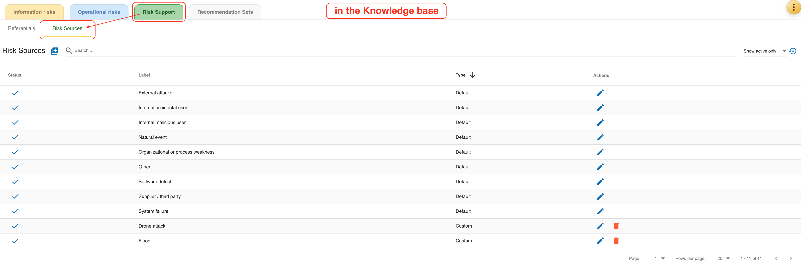
1.2. Information risks
In the information risk table, Risk source is displayed as a read-only column immediately after Asset.
When a source is assigned, the table shows its label.
When no source is assigned, the table displays -.
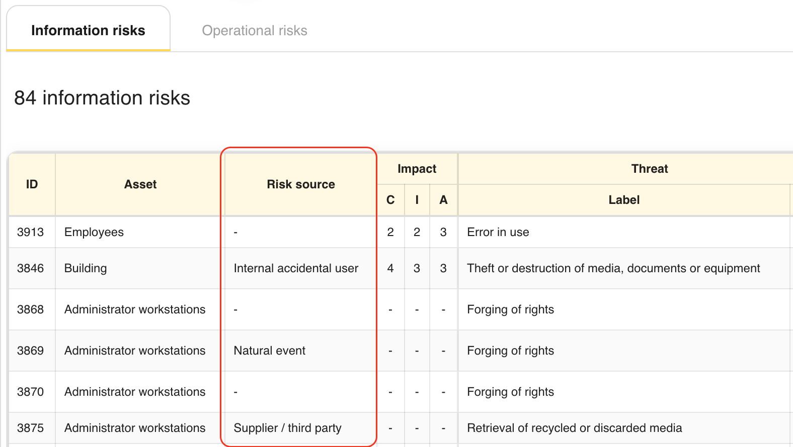
In the information risk sheet, the Risk source row is displayed above Threat.
The analyst can:
-
select an active source from the drop-down list;
-
choose
Noneto keep the field empty; -
clear the current value;
-
create a new risk source directly from the sheet and assign it immediately.
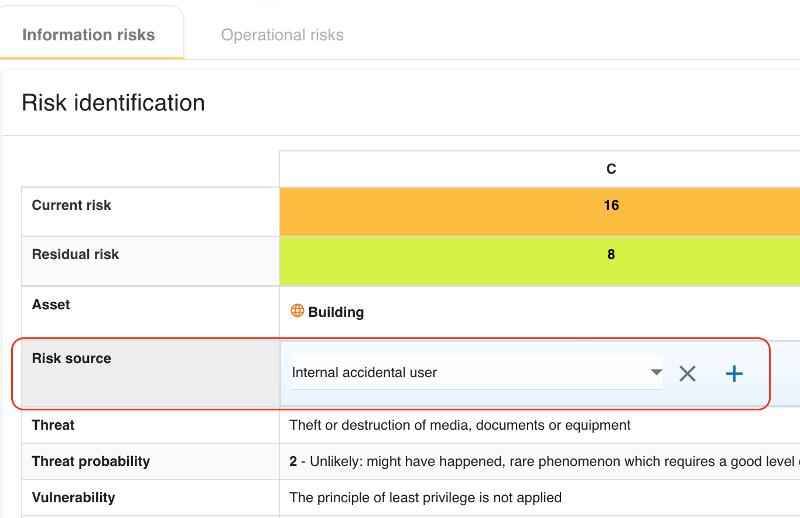
1.3. Operational risks
In the operational risk table, Risk source is displayed as a read-only column between Asset and Risk description.
This keeps the origin of the scenario visible directly in the operational risk register.
The operational risk sheet provides the same assignment behavior as the information risk sheet:
-
select an active source from the drop-down list;
-
choose
None; -
clear the current value;
-
create a new source from the sheet and assign it immediately.
1.4. Reports, exports, and reuse
Assigned risk sources are propagated to the risk API payloads, risk-management views, exports, and deliverables where risks are listed. They are also preserved in analysis export and import operations so that the same risk-source catalog and assignments can be reused in another MONARC environment.
2. Reassessment trigger criteria
MONARC now lets the analyst define analysis-level reassessment trigger criteria from the analysis actions menu.
The dedicated Reassessment trigger criteria dialog is used to maintain the list of conditions that require the analysis to be reviewed again.
The dialog is also part of the MONARC method. Open it from either of these method substeps:
-
Step 1,
Context Establishment>Define reassessment strategy; -
Step 4,
Implementation and monitoring>Reassessment trigger criteria.
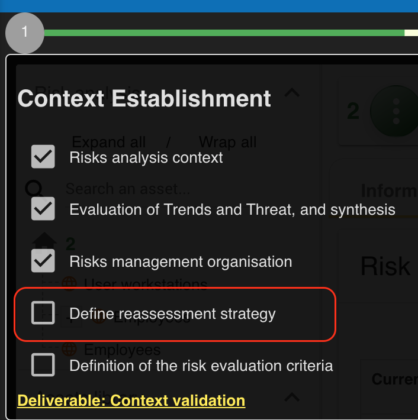
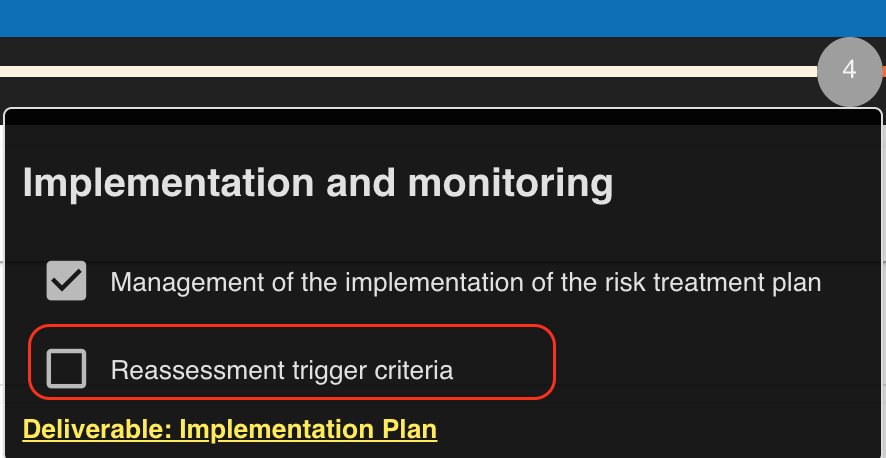
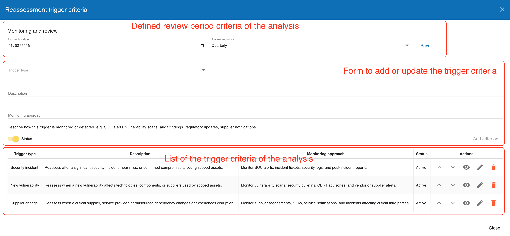
Each criterion contains:
-
a
Trigger type; -
a
Description; -
a
Monitoring approach; -
an active or inactive status.
The list supports creation, edition, activation or deactivation, deletion, and manual reordering. When no criterion is defined, the dialog shows an explicit empty-state message for the analysis.
The Monitoring approach field documents how the trigger is detected in practice, for example through SOC alerts, vulnerability scans, audit findings, regulatory updates, or supplier notifications.
2.1. Analysis reassessment schedule
The Reassessment trigger criteria dialog also contains the analysis-level Monitoring and review settings. Set the analysis Last review date and choose its Review frequency:
-
Annually(the default); -
Semi-annually; -
Quarterly; -
Monthly.
MONARC calculates the due date by adding the selected interval to the last review date. When that due date has passed, a warning icon is shown for the analysis. Hovering the icon explains that the analysis requires attention and shows the recorded last review date.
This analysis-level schedule is separate from the schedule held on each individual risk. Use it to track the review of the overall analysis and use the risk-level schedule where a risk requires its own reassessment date.
2.2. Default and reusable criteria
The trigger selector is prefilled from a reusable catalog of suggested trigger types, while still allowing analysts to maintain analysis-specific descriptions and monitoring approaches. These criteria are also included in deliverables and can be exported and imported with the analysis when the relevant assessment options are enabled.
3. Risk context guidance for scenario-based descriptions
Both information and operational risk sheets now guide the analyst to describe Risk context as a scenario rather than as a short technical note.
The field guidance explicitly encourages the analyst to include:
-
the risk source;
-
the event or cause;
-
the affected asset;
-
the consequence.
The inline example follows this structure and the help text also asks the analyst to describe the consequence explicitly, for example as data loss, service disruption, or customer data disclosure. This keeps the risk description aligned with ISO 27005:2022 scenario-based wording without changing the underlying risk model.
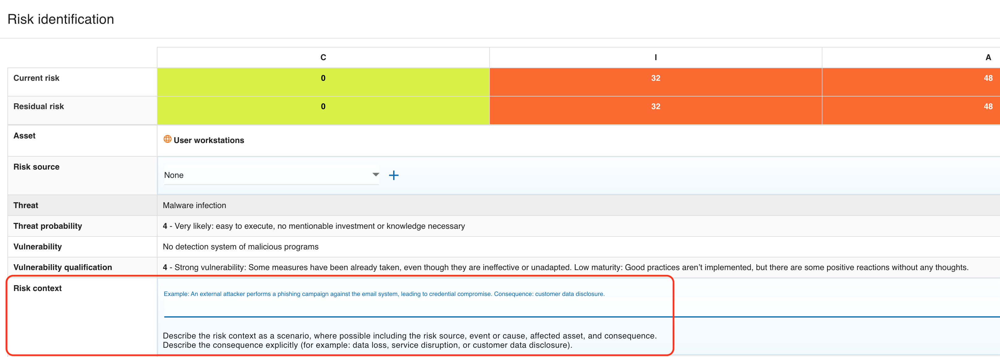
4. Risk review metadata and monitoring approach
Each information and operational risk sheet now contains a Governance & review section.
This section groups accountability and monitoring data in one place.
The Monitoring and review part of the sheet provides:
-
Last review date; -
Next reassessment date; -
Related reassessment trigger criteria; -
Review frequency; -
an
Otheroption with a custom review-frequency value.
The suggested review frequencies are:
-
Monthly -
Quarterly -
Semi-annually -
Annually -
On trigger
The On trigger value is intended to be used together with the reassessment trigger criteria maintained at analysis level.
For each risk, these review fields are exported, reported, and available in the risks-management batch update view when the current linked supervisor is allowed to update review metadata.
When an analyst enters a Last review date, MONARC proposes the Next reassessment date one year later. The analyst can keep the suggested value or replace it. Related reassessment trigger criteria can be selected only after a next reassessment date is available; multiple criteria may be linked to the same risk.
When a risk’s next reassessment date is in the past, the information-risk table, operational-risk table, and risks-management table show an orange warning icon next to its identifier. The tooltip gives the expired date. The risk warning is deliberately driven by the explicit next reassessment date, while the analysis warning is calculated from its last review date and selected analysis-level review frequency.
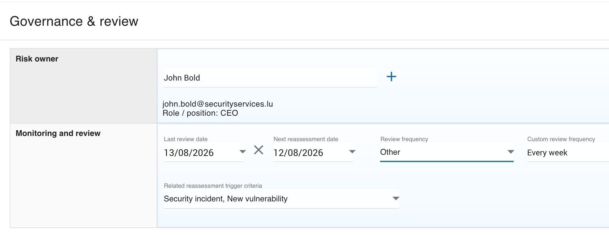
At analysis level, the reassessment trigger criteria also gained the Monitoring approach field.
This complements the per-risk review metadata by documenting how trigger conditions are monitored or detected.
5. Residual risk acceptance after treatment
Residual risk acceptance is now recorded explicitly in a dedicated Residual acceptance section on both risk-sheet types.
This makes the acceptance of the residual risk traceable after treatment rather than leaving it implicit in the treatment status alone.
The section records:
-
the
Decision; -
the decision
Date; -
the
Justification.
The guidance text also covers the case where no treatment is applied and the residual risk is accepted as is.
The interface uses explicit statuses such as Accepted and Not accepted, and the risk tables display a visual indicator for non-accepted residual risk decisions.
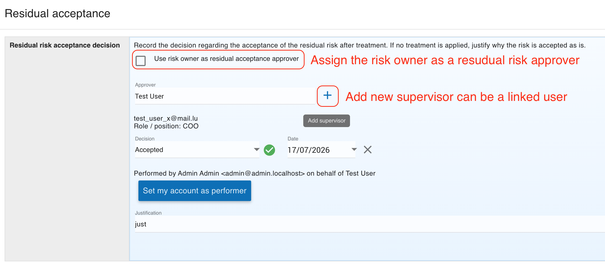
6. Updated impact terminology
The evaluation-scale screen now uses the label Impact evaluation (severity of consequences) to clarify the meaning of the impact model.
This is a terminology clarification only:
-
the impact scales remain the same MONARC evaluation mechanism;
-
the impact values still drive risk calculation as before;
-
the updated wording explains that impact corresponds to the severity of consequences.
The intent is to align the guide and the user interface with ISO 27005:2022 without renaming the underlying data model everywhere or changing existing calculations.
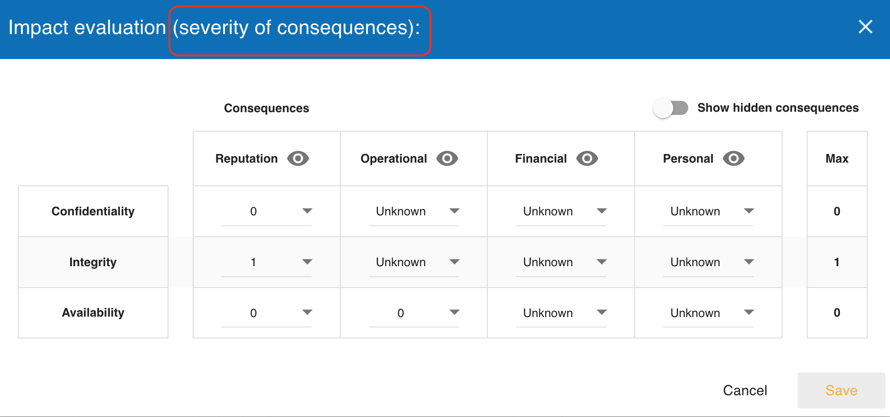
7. Interested parties and requirements
The Risk analysis context dialog now contains a second tab named Interested parties & requirements.
This tab lets the analyst document stakeholders and their needs as part of the context-establishment work.
Each entry stores:
-
a
Stakeholder; -
a
Requirement.
The list supports creation, edition, deletion, and manual reordering. An empty analysis displays a dedicated message until at least one interested party is recorded.
The tab extends the first substep of Step 1, Context Establishment: open Risks analysis context and then select Interested parties & requirements.
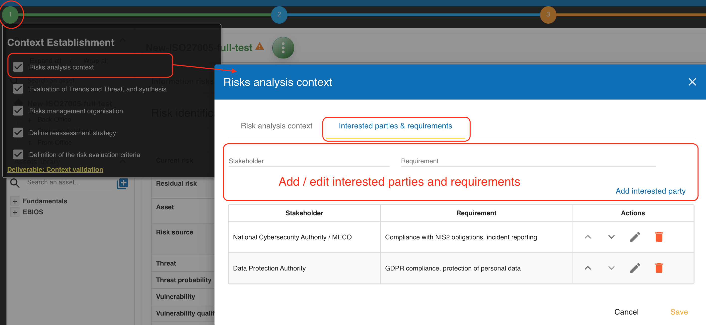
These entries are included in deliverables through the TABLE_INTERESTED_PARTIES tag and can also be exported and imported with the analysis when assessment export is enabled.
8. Analysis supervisors and role-based approvals
The platform now manages analysis-level Supervisors instead of relying only on free-text risk owners.
Supervisors are maintained from the analysis actions menu in a dedicated dialog.
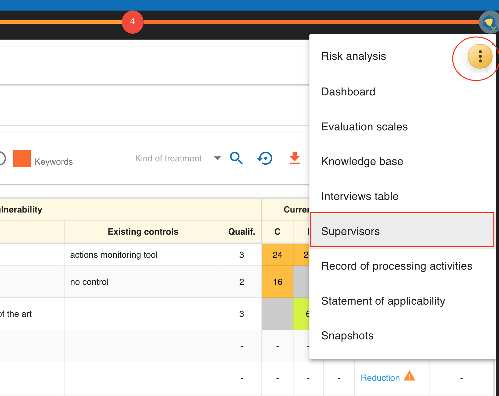
Each supervisor can contain:
-
Name; -
Email; -
Linked user; -
Role / position; -
one or more MONARC roles;
-
active or inactive status.
The available roles are used to drive behavior in the risk sheets and the risks-management view. In practice, the same supervisor may act as:
-
risk_owner; -
residual_risk_approver; -
or both.
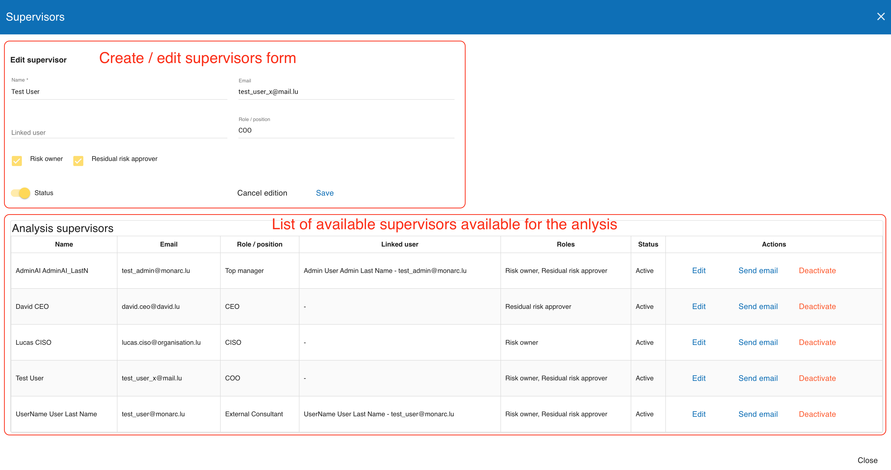
In information and operational risk sheets, the Risk owner field now uses the analysis supervisor list instead of a plain reusable text value.
When allowed, the user can also open the supervisors dialog directly from the risk sheet to add a new supervisor without leaving the current risk.
Reports and exports also include supervisors, linked users, roles, and assigned risks through the supervisors appendix generated by the TABLE_RISK_OWNERS deliverable tag.
The supervisors model is the first part of MONARC’s governance, risk, and compliance (GRC) functionality. It establishes accountable roles and linked users for the current analysis; the GRC capabilities will be extended in future releases.
9. Residual risk acceptance approver workflow
Residual acceptance is now tied to an explicit approver workflow based on analysis supervisors. The workflow supports three main cases.
-
If the selected
Risk owneralso has theresidual_risk_approverrole, the user can tickUse risk owner as residual acceptance approver. -
If the risk owner does not have the approver role, another supervisor with the
residual_risk_approverrole must be selected in theApproverfield. -
If the effective approver has no linked MONARC user account, the current logged-in user may complete the decision on behalf of that approver.
The decision fields remain disabled until an effective approver exists. When the current user is not the effective linked approver, the sheet displays a read-only warning and blocks decision changes.
The section also records performer information:
-
performer name;
-
performer email;
-
whether the action was performed on behalf of the selected approver.
The Set my account as performer action is provided for cases where the acting user is allowed to complete the approval.
Changing the risk owner can reset residual-acceptance data when the approver relationship changes.
10. Risk history and audit trail
Information and operational risk sheets now include a dedicated History section.
This section exposes the analysis history entries related to the current risk in a read-only table.
The history view provides:
-
a
Change typefilter; -
the
Date; -
the acting
User; -
the
Change; -
the
Details.
The available change-type filter covers:
-
all changes;
-
risk creation;
-
field changes;
-
recommendation links and unlinks;
-
consequence creation, update, and deletion;
-
impact-scale updates;
-
residual-acceptance updates.
Long values can be expanded inline through Show and collapsed through Hide.
When no entry exists, the sheet displays No history available.
This history is append-only from the user perspective: the guideable interface exposes it for consultation only and does not provide any manual edit or delete action.
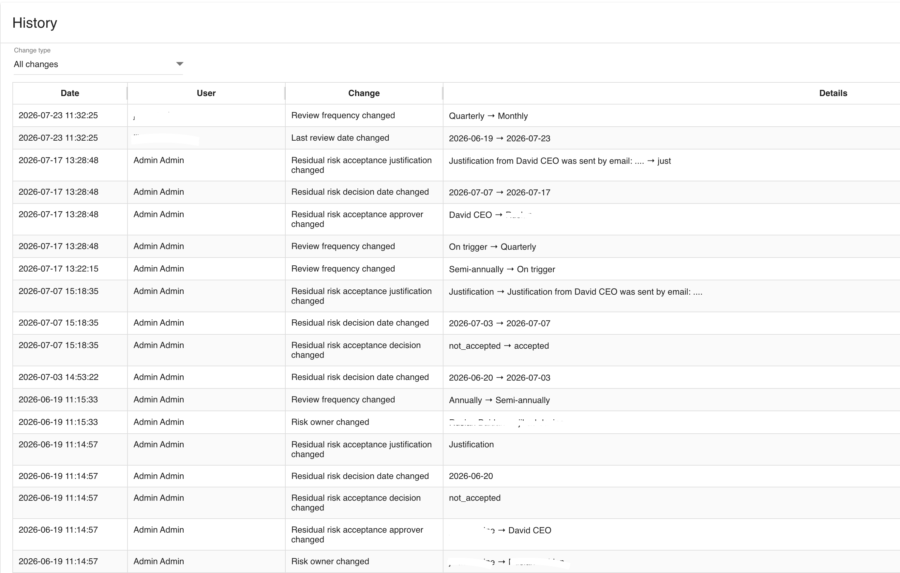
11. Risks management view and batch operations for linked supervisors
Users linked to an active analysis supervisor can access a dedicated Risks management view when they have at least one applicable supervisor role and assigned risks.
The entry point is visible:
-
from the
My risk analysislist on the home page through theMy assignmentsindicator andManage my risksbutton; -
from the analysis tools menu through
Risks management; -
from the analysis header through the
My assignmentspanel.
The My risk analysis list shows the number of risks assigned to the current linked supervisor as owned and approvals. Select Manage my risks for an analysis to open the filtered view directly. A linked supervisor with no assigned risks sees No assigned risks and no management action.
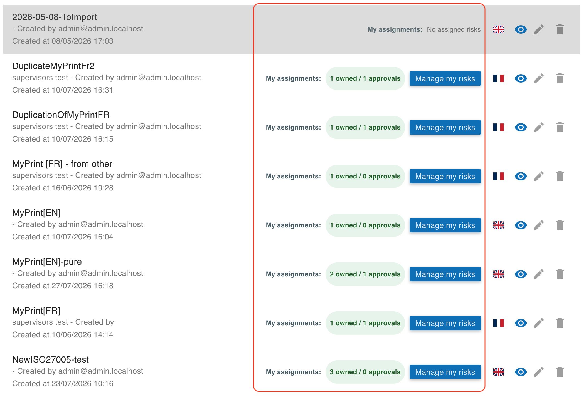
The page only shows risks where the current linked supervisor is involved, either as:
-
risk owner;
-
residual risk approver;
-
or both.
Instead of the normal analysis filters, the page exposes a role-based batch update panel. Depending on the supervisor role, it allows batch updates of:
-
Last review date; -
Next reassessment date; -
Related reassessment trigger criteria; -
Review frequency; -
Residual risk decision; -
Residual risk decision date; -
Residual risk acceptance justification.
Use the decision filter to narrow the list, select the relevant risks with their checkboxes, enter the fields to update, and select Update. The export button downloads the displayed risks-management data as CSV.
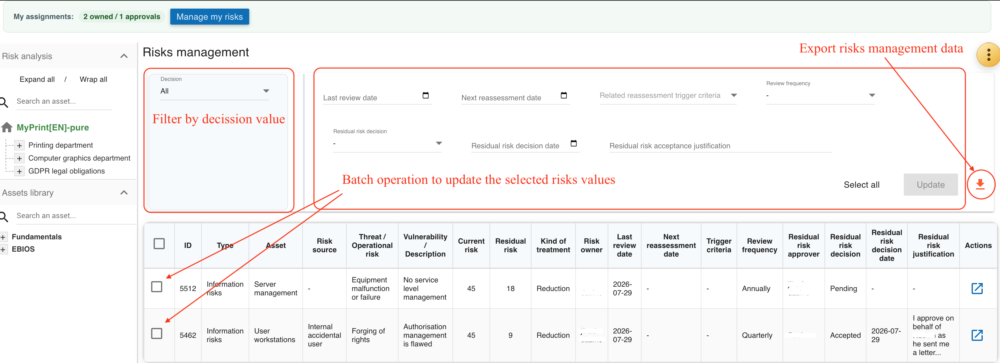
The table also displays the risk owner, risk source, and residual-risk approver. Those assignments are displayed for context but are not editable from the batch view; update them from the corresponding risk sheet. Each batch execution reports how many risks were updated and how many were skipped, and skipped rows include the justification.
Use the Export (CSV) button to download the risks currently shown in this view. The export contains both information and operational risks and includes the visible governance fields, source, linked trigger criteria, residual approver, and residual-decision data.
The table itself keeps the relevant ISO 27005:2022 fields visible in one place, including:
-
risk type;
-
asset;
-
risk source;
-
threat or operational risk;
-
current and residual risk;
-
risk owner;
-
review metadata;
-
residual risk approver;
-
residual acceptance decision data.
11.1. Deadline and acceptance indicators
MONARC displays the following indicators in the analysis and risk lists:
-
An orange warning icon next to the analysis name means the analysis review is overdue: its last review date plus the selected analysis review frequency has passed.
-
An orange warning icon next to a risk identifier means that risk’s explicit next reassessment date has passed.
-
A green check-circle next to a risk treatment means the residual-risk acceptance decision is
Accepted. -
An orange warning icon next to a risk treatment means the residual-risk acceptance decision is
Not accepted.
Hover an icon to display its explanation.
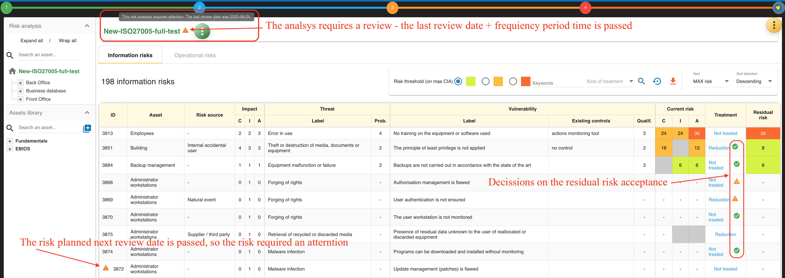